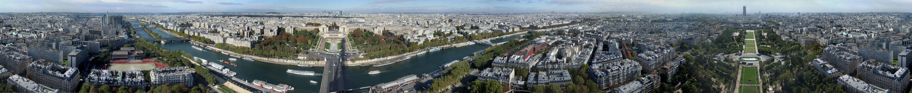
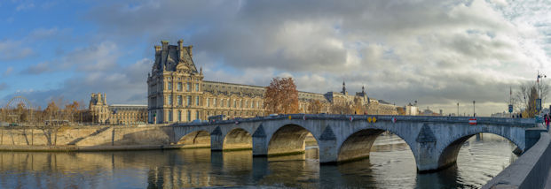

Paris symbolise la culture française.
En 2017 elle est classée comme étant la ville la plus élégante au monde.
Surnommée la Ville Lumière, elle abrite de nombreux monuments et est l'une des villes les plus visitées au monde.
Elle abrite le musée d'art le plus grand et le plus visité au monde. Paris est la capitale mondiale du luxe. Les premier et troisième groupes mondiaux ont leur siège à Paris.
Parmi les marques de luxe les plus valorisées au monde les marques françaises sont les plus nombreuses et les trois premières sont parisiennes.
Paris est la ville qui en 2018 compte le plus de palaces au monde.
À Paris se déroule tous les ans la plus prestigieuse semaine internationale de la mode.
C'est dans cette ville qu'ont exercé et qu'exercent des couturiers de renommée mondiale et plusieurs marques françaises du luxe sont connues internationalement.
Dans le secteur de la haute gastronomie Paris est la ville qui compte le plus grand nombre de meilleures tables au monde.
La capitale française n'est jumelée qu'avec une seule autre ville, Rome, ce qui est aussi valable dans l'autre sens, avec ce slogan « Seul Paris est digne de Rome, seule Rome est digne de Paris ».
Le club de football du Paris Saint-Germain et celui de rugby à XV du Stade français sont basés à Paris.
Le Stade de France, enceinte de 80 000 places construite pour la Coupe du monde de football 1998, est situé au nord de la capitale, dans la commune voisine de Saint-Denis.
Paris, qui accueille chaque année le tournoi du Grand Chelem de tennis de Roland Garros, a organisé les Jeux olympiques en 1900 puis en 1924 et deviendra en 2024 la deuxième ville avec Londres à les avoir accueillis trois fois.
C'est à Paris que se déroulent tous les ans deux des plus prestigieuses courses hippiques au monde.
Paris accueille également de nombreuses compétitions internationales et — depuis 1975 — l'arrivée du Tour de France, troisième événement sportif le plus suivi au monde.
